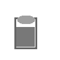

Jak hodnotíš spánek?
Jak hodnotíš subjektivní stres? (1 = nízký, 5 = vysoký)
Jak hodnotíš tento den?
Jak hodnotíš únavu? (1 = nízká, 5 = vysoká)

Odpočinek
Nemoc
Vyber, které sekce chceš při zápisu zobrazovat a vyplňovat.
Zatím žádné zápisky. Napiš první nahoře ⬆️